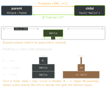

swiftui · folio
In one line: Layout is a negotiation, not a constraint solver: the parent proposes a size, the child chooses its own size (it may ignore the offer), the parent places the child. Every modifier is a new parent in that chain — so order matters.
Download PDF Print view LaTeX source

How it works
- Three steps, top-down proposal then bottom-up answer: (1) parent proposes a
ProposedViewSize; (2) child returns aCGSize— its decision, never forced; (3) parent positions the child in its own coordinate space. One pass, no Auto Layout solver. ProposedViewSize— each axis isCGFloat?:nil= “your ideal” (.unspecified);0= “your minimum” (.zero);.infinity= “your maximum” (.infinity); a number = a real offer.- Fixed vs flexible:
Text/Imagehug content (Textwraps then truncates when offered less);Color,Shape,Spacer,GeometryReaderare greedy — they take whatever is offered. .frame(width: 100)proposes exactly 100 and reports 100, whatever the child does (it may overflow)..frame(maxWidth: .infinity)is a negotiating frame: it clamps the offer to[min, max]— fills what the parent offered, not the screen.fixedSize()replaces the incoming proposal withnil→ child takes its ideal size.fixedSize(horizontal: false, vertical: true)= wrap, never truncate.- Stack distribution (
HStack): subtract spacing; probe each child’s min/max to get its flexibility; highestlayoutPrioritygroup first (lower groups reserved at their min); within a group, least flexible child first, each offered remaining ÷ children left(unverified). Default priority0. - Alignment: the stack’s
alignment:picks the guide all children share (.leading,.firstTextBaseline);.alignmentGuide(_:computeValue:)lets one child move its own guide; a customAlignmentIDaligns views across containers. GeometryReadertakes all proposed space, proposes it to its child and places the child top-leading (iOS 14+). PrefercontainerRelativeFrame(17),onGeometryChangeor.background { GeometryReader… }to read size.ViewThatFits(16): tries children in order, shows the first whose ideal size fits the proposal (in: .horizontalto limit the axis).Layoutprotocol (16):sizeThatFits(proposal:subviews:cache:)+placeSubviews(in:proposal:subviews:cache:); measure withsubview.sizeThatFits(_:), place withsubview.place(at:anchor:proposal:).
Example — a flow (wrap) layout
struct Flow: Layout {
func sizeThatFits(proposal: ProposedViewSize, subviews: Subviews,
cache: inout ()) -> CGSize {
let w = proposal.replacingUnspecifiedDimensions().width
var x = 0.0, y = 0.0, row = 0.0
for s in subviews {
let d = s.sizeThatFits(.unspecified) // ideal size
if x + d.width > w { x = 0; y += row; row = 0 }
x += d.width; row = max(row, d.height)
}
return CGSize(width: w, height: y + row)
}
func placeSubviews(in b: CGRect, proposal: ProposedViewSize,
subviews: Subviews, cache: inout ()) {
// same walk; s.place(at: CGPoint(x: b.minX+x, y: b.minY+y))
} }One negotiation, three probes

Modifier order — each modifier wraps the view below it, so it is a new parent:
Text("A").padding().background(.red) // red incl. padding
Text("A").background(.red).padding() // red behind text only
Text("A").frame(width: 80).border(.blue) // border = 80pt box
Text("A").border(.blue).frame(width: 80) // border hugs the textTraps
- “
nilproposal means zero / fill” — it means ideal. maxWidth: .infinitynot filling — an ancestor (fixedSize, anoverlay, a greedy sibling) never offered the width. Spacers cannot create space either.GeometryReaderaround a small view balloons it and pins content top-leading; one perListrow costs a layout pass each.Color.red.frame(height: 200).ignoresSafeArea()— the frame, not the colour, touches the edge; use.background(Color.red.ignoresSafeArea()).Layoutcache: the defaultupdateCacherebuilds it whenever the layout or a subview changes — it pays only with an incrementalupdateCache; keep()unless measured.placeSubviewspoints are in the parent’s space — offset bybounds.minX/minY, never assume the origin is(0,0).
Remember
“Parent proposes, child disposes, parent places.” 0 / nil / ∞ = min / ideal / max. Read modifiers bottom-up as parents wrapping children.